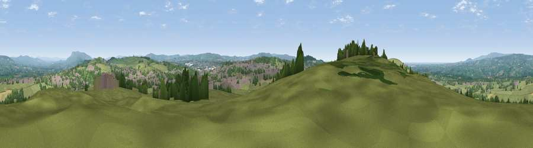

Viewpoint near Salesbury
#7397 in England · top 14% of its area beats it · near SalesburyWhere it is
The exact computed spot (SD 67450 31412). Click the marker for map links.
The view, rendered

A 360° render of this exact spot computed from the terrain model, tree cover and land cover — summer colours, afternoon light, calibrated against photographs of famous viewpoints. Real trees, hedges and buildings will differ in detail.
The panorama
Grey silhouette: terrain skyline in each direction (720 bearings, Earth curvature and refraction included). Dashed green: skyline with trees (+15 m) and buildings (+8 m) as obstacles. Blue strip: how far the ground is visible on each bearing.
Where the view opens
Wedge length = distance to the farthest visible ground on that bearing (vegetation-aware). Rings at 10, 25 and 50 km.
What fills the view
61% grassland · 21% woodland · 16% built-up · 2% cropland
Angular shares of the visible panorama (visual magnitude), not map area. Landscape diversity 0.44 (0–1 Shannon).
Key numbers
More beautiful places nearby
The staircase of upgrades: each row has a higher view potential than everything closer. Driving times are estimates from straight-line distance, calibrated against real road routing — check an actual route before setting out.
| Place | Direction | Drive | Score |
|---|---|---|---|
| Viewpoint near Mellor | W · 2 km | ~5 min | 71.8 |
| Viewpoint near Pleasington | SSW · 4 km | ~8 min | 74.8 |
| Darwen Hill | S · 10 km | ~19 min | 80.7 |
| Rivington Pike | S · 18 km | ~31 min | 81.9 |
| White Brow | S · 19 km | ~33 min | 82.9 |
| Warton Crag | NNW · 45 km | ~65 min | 83.2 |
| Viewpoint near Grange-over-Sands | NNW · 55 km | ~76 min | 83.4 |
| Viewpoint near Cartmel | NW · 57 km | ~79 min | 87.0 |
53.77802, -2.49541 · source: screening · position refined by local search. Computed location — check access rights before visiting.